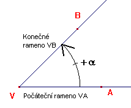
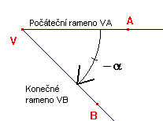
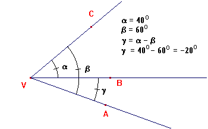

- Proti smìru hodinových ruèièek - kladný úhel

- Po smìru hodinových ruèièek - záporný úhel

Nastane-li tedy situace, že máme odeèítat vìtší úhel od menšího, výsledkem bude záporný úhel.


Zjisti jaký je vztah mezi
+a a - a